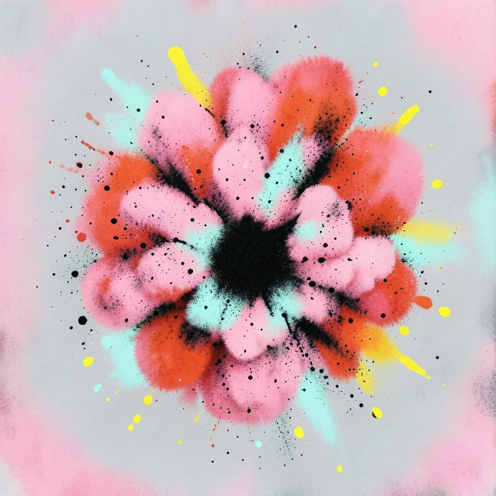

🎵
SoulSong 隨身音樂 MV 館
100% 拍點同步歌詞 MV・320kbps 隨身聽
🔗 分享給同事親友
📱 安裝/QR
全部曲目 (10首/16版)
🏫 校園行政三部曲 (3首/8版)
🔥 學務處六人真名版 (2版)
💝 親友恩師紀念單曲 (6首)
🎬 直式同步歌詞 MV
🎧 隨身聽 + 動態歌詞
⚡ 100% 拍點對齊・單句快節奏版

校園行政三部曲
載入中...
點選任一行歌詞可直接跳轉播放
⬇️ 下載 MP3
🎬 下載 MV
📝 下載歌詞
全部精選曲目
共 10 首・16 個版本
00:00
00:00
請選擇歌曲
SoulSong 隨身音樂館
⏮
▶
⏭
📱 手機掃碼開啟 & 加入主畫面
任何手機（4G / 5G / Wi-Fi）皆可直接掃碼或點擊下方公開網址開啟：
https://lovepig740306-alt.github.io/soulsong-app/
📋 一鍵複製公開網址（可貼到 LINE 群組）
💡 如何安裝成手機桌面 APP 圖示：
•
iPhone (Safari)
：點選底部「分享」按鈕 📤 ➔ 選擇
「加入主畫面」
。
•
Android (Chrome)
：點選右上角「⋮」選單 ➔ 選擇
「安裝應用程式」
或
「加到主畫面」
。
開始聽歌看 MV